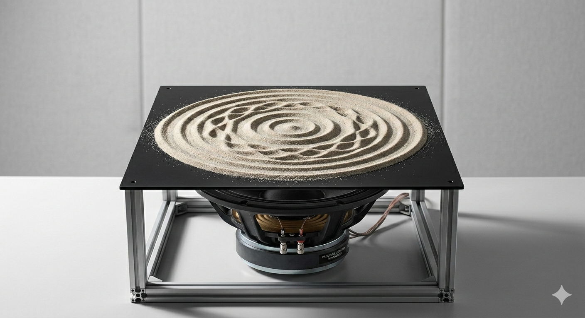

Version 1.0, February 2026
Copyright Kurt Keutzer, 2026
The author grants the right to copy and distribute this file, provided it remains unmodified and original authorship and copyright is retained. Adding tasteful artwork is encouraged. Please do not change the title (in html) of this document. The author retains both the right and intention to modify and extend this document.
This FAQ addresses questions around the phenomena known as kuṇḍalinī emergency or spiritual emergency. It is written on the occasion of the 50th anniversary of my own kuṇḍalinī emergency. It is the first in a series of updates to the prior FAQs, with links below, that were composed and edited between 1996 and 2002.
What is a kuṇḍalinī emergency?
Have you experienced a kuṇḍalinī emergency?
How do I know this is a "kuṇḍalinī emergency" and not a health and/or mental problem?
Is kuṇḍalinī really necessary for my awakening?
Ok. But even if kuṇḍalinī is necessary for an awakening, does it still have to be this intense?
What about the case of Gopi Krishna?
What can I do to make my kuṇḍalinī emergency more bearable?
What about the organization known as Patanjali Kundalini Yoga Care (PKYC)? Can they help me?
This FAQ has been helpful. Would you mind if I emailed you about my own kuṇḍalinī emergency?
As the name implies, a kuṇḍalinī emergency has two aspects. In the pursuit of spiritual awakening, over a period of years on the path, it is not unusual to have a variety of physical and psychological challenges, particularly during retreat. When these challenges are faced simultaneously, and intensely, it is natural to call them a "spiritual emergency." A kuṇḍalinī emergency is a particular variety of spiritual emergency in which the sources of the challenges appears to have a single underlying cause: kuṇḍalinī. Independently of any unpleasant challenges, kuṇḍalinī rising may initially manifest in a variety of ways. A few examples are:
The physical challenges associated with a kuṇḍalinī emergency include, in order of increasing discomfort:
The psychological challenges include, in order of increasing discomfort:
These challenges may be further compounded by life challenges in:
I received śaktipāta from Swami Muktananda during a weekend retreat in 1974. In the ensuing two years my kuṇḍalinī experiences continued to increase in intensity until, during a month-long retreat in 1976, I had a kuṇḍalinī experience that was simultaneously a major milestone in my path to awakening and absolutely terrifying. As kuṇḍalinī surged in an instant to my sahasrāra, I not only witnessed "brighter than a thousand suns," I was brighter than a thousand suns. In a very real sense my egoic state was, for quite some time, shattered in the process. All this may sound like genuine progress toward awakening, but an abrupt shift to life without an egoic reference point or a convenient dam against unconscious shadow content, was absolutely terrifying. In the ensuing six months I experienced to some degree or another every one of the physical, psychological, and life challenges mentioned elsewhere in the FAQ. About all I had the confidence to do in that period was wash, go to the bathroom, and feed myself. As a result of that experience I have tremendous compassion and empathy for how lonely and terrifying it can be for those going through a kuṇḍalinī emergency without support or context for the experience.
From those days onward, until today, I have exerted myself to learn everything I could regarding kuṇḍalinī from the various traditions of India, related traditions in Tibet, and China, and from modern psychological and scientific perspectives. I have also studied and practiced with many, many masters from Tibet, India, and modern masters from the United States.
In 1996, the emergence of the internet forums created an explosion of misinformation regarding kuṇḍalinī In response, I wrote a series of Kuṇḍalinī FAQs. As I was early in my professional career, I hesitated at that time to be very detailed about my own personal experiences. Nevertheless, in these FAQs I took the opportunity to share a bit of what I had come to learn from my experience, as well as from my study and practice under masters of kuṇḍalinī and related yogic traditions. Over the years these FAQs served as both a magnet of interest and a medium for me to meet many people undergoing a kuṇḍalinī emergency, other practitioners, and a few modern masters of that path. I made many resolutions to update these FAQs over the years, and now, finally in 2026, 50 years after my own emergency and 30 years after my original FAQs, I have a bit more leisure and opportunity to do so.
If you're experiencing the physical and mental symptoms described previously, you should absolutely have your physical health checked. Any symptom described could have its root in a genuine physical problem that requires an appropriate treatment. The medical treatment of diagnosable physical problems is obvious. As for the treatment of diverse psychological symptoms, the published literature of the medical community has a range of opinions; however, the literature is in agreement that if an individual loses contact with reality or poses a danger to themself or others, then psychiatric treatment is required.
In my own non-professional opinion, if the kuṇḍalinī awakening is authentic, then it will not be permanently stopped by temporary use of mild medication. On the other hand, an individual avoiding dealing with physical or mental problems by calling them a "kuṇḍalinī emergency" might be stuck in denial for the rest of their lives. In short, it is perhaps best to be conservative and not challenge oneself to surmount any challenge through personal fortitude. Over the last thirty years I've also observed that for individuals undergoing an authentic "kuṇḍalinī emergency," no matter how intense the challenges may be, the individual remains lucid, and, if anything, humble about their circumstances. On the other hand, individuals drifting into a truly psychotic state will be delusional and often have inflated self-importance with regard to their state. The irony here is that those who most need help are unlikely to seek it.
For someone undergoing a kuṇḍalinī emergency, it is entirely natural to wonder: "Isn't there an easier way?!" Amidst the myriad of spiritual paths and their results, two distinctly different paths stand out. I'll borrow some terminology from the Tibetan tradition and describe these as:
The view that yogic methods leading to a kuṇḍalinī awakening (by this or another name) are necessary for a complete Awakening is held in the diverse literature of Trika, the Śaivism of Kashmir, as well as broadly in other Indian tantric literature. It is found pervasively in the literature of the Haṭha Yogis and the Nāthā saṃpradāya. The yogic methods to activate or awaken kuṇḍalinī in these traditions vary widely. Some, such as Siddha Mahāyoga rely principally on initiation (ḍīkṣā) by a guru. Others only apply a minimum of effort in watching the breath or mantric meditation. Others methods, as practiced by Haṭha and Nāthā yogis, may use a lot of intention and force in their practices of prāṇayāma, bandhas, and so forth.
The centrality of kuṇḍalinī is also held by recent spiritual figures such as Shri Ramakrishna, Swami Sivananda, Paramahamsa Yogananda and Swami Vivekananda, and, of course, by groups that actively label themselves as Kuṇḍalinī Yoga or Siddha Mahāyoga. For many masters of Tibetan Buddhist tradition, yogic practices of the "completion stage" or "anu yoga" that engage the subtle body of channels (rtsa, nadī), winds (rlung/vayu), and drops (thig le/bindux) are considered to be a key prerequisite to the higher states of realization.
However, not all Indian and Tibetan traditions agree that yogic methods of the subtle body are essential. One of the earliest Tibetan masters to advocate this view was Jetsun Milarepa's disciple Je Gampopa. Although an adept of yogic methods himself, he exposited a path that came to be known as "Sūtra Mahāmudra" in which realization could be obtained directly without recourse to yogic methods of the subtle body. This tradition is active today within the Kagyu schools of Tibetan Buddhism. More recently, we can see a trend among some teachers of Nyingma and Bon schools to teach Dzogchen (Ati Yoga) openly and directly without any prerequisites at all. Traditionally, as the ninth and highest path of each of their schools, training in the lower eight paths, including in yogic methods of channels, winds, and drops, would be a prerequisite. There are many, many other traditions that aspire to Awakening, such as Zen, Vipassana, or Bhakti yogas, that simply consider kuṇḍalinī irrelevant.
In making the distinction between paths of yogic methods and paths of direct liberation, I hope I have not left the reader with the impression that these paths are incompatible. In fact, traditionally among many Tibetan lineages, yogic methods are a prerequisite for the path of direct liberation.
In conclusion, most pertinently for the reader wondering if they can just wait this emergency out and pursue another, gentler path: over the years I have indeed known people who experienced a powerful kuṇḍalinī emergency, but as things settled down, they were able to pursue a path of direct liberation without any significant kuṇḍalinī-related challenges (or boons).
Anyone experiencing the intense symptoms associated with a "kuṇḍalinī emergency" is sure to question:
why me? Does it really need to be this intense?
Hopefully you will find comfort in the terse writings of the 9th Indian Adept Virūpa known as the Vajra Verses.
In his essential description of
the entire path, Virūpa speaks of the channels of the subtle body being opened by the "cold winter winds," and later
commentators elaborate on the intense pain that may accompany this.
Elsewhere in the same work it is also mentioned that visions of terrifying demons may appear to the practitioner.
Further, it is mentioned that due to the rapid progress of the practitioner, negative forces
(māras, elemental spirits, and others) may try to do material harm to the practitioner
so as to obstruct their progress.
In short, if you agree that the rise of kuṇḍalinī dramatically accelerates progress along the path to awakening, then it is not surprising that the diverse challenges and obstacles of traversing that path are condensed in a brief period and intensified. A deep resolve, grounded in the understanding that kuṇḍalinī is working to advance your awakening despite the upheaval, may at least reduce the anxiety that something has gone wrong in your life and practice.
With regard to his kuṇḍalinī emergency, or me, Gopi Krisha's case is a lesson in the dangers of over-exertion in using effortful methods to awaken kuṇḍalinī. Over the years I have encountered directly and indirectly even more extreme examples of throwing your subtle body system out of balance through forceful concentration or intense application of breathing techniques. Whatever the source of his kuṇḍalinī awakening, Gopi Krishna does appear to have had a real and sustained kuṇḍalinī unfoldment, and his later writings give an important perspective of a modern pioneer.
As a general comment, if you're like me, you have spent most of your life dualistically looking at the world through the lens of an ego that experiences itself as independent from the world and acts on the world to accomplish its own goals. We have an abstract sense that pursuing a path of awakening will move us away from this approach to life; however, we still instinctively operate from that vantage point. Thus, when anything arises to unseat or undermine the ego, it is seen as foreign and negative. The appreciation of the role of kuṇḍalinī as a positive force on our path to awakening begins with a conscious willingness to relax from the viewpoint that anything that makes the ego feel bad is bad.
A discussion of precisely how kuṇḍalinī advances us on the path naturally includes the notions of kriyas. Kriyas, literally, in Sanskrit, "activities," are spontaneous movements that occur due to the movement of kuṇḍalinī. They include body activities such as trembling, shaking, spontaneous yoga postures, or prāṇayāmas; speech activities such as yelling, or spontaneous chanting; and mental activities such as pleasing or displeasing visions.
Although the details vary from tradition to tradition, paths of yogic methods describe how the subtle body consists of a network of channels through which prāṇa (subtle breath) and citta (consciousness) move. Particularly important amidst these channels were hubs of channels called cakras. Coemergent with our condition of ignorance, these channels are twisted and partially blocked by impurities. Given this model, I've found it useful to view our subtle body as a network of garden irrigation hoses (channels) and the kuṇḍalinī as providing pressure to the water running through it. As the pressure of the water increases, kinks and twists in the hoses (channels) straighten and impurities in the hoses are flushed out.
For me, over time kuṇḍalinī seemed less like a localized force moving to energize the channels and cakras, and more like a pervasive vibration that was particularly evident at the cakras: the junction points of the channels. As a reflection of this I more often model kuṇḍalinī like a vibratory force of sound applied to the sand of our mind-body complex: like what is called a Chladni Plate.

Over the years I've met many people experiencing varieties of kuṇḍalinī emergencies. One thing that struck me about this is that the intensity of their discomfort had little to do with the intensity of their kuṇḍalinī movement. Instead, for very tight and control-oriented individuals, a very small movement was enough to greatly disturb them. On the other hand, other individuals with very strong movement of kuṇḍalinī might not be disturbed at all. The Chladni Plate metaphor of kuṇḍalinī helps to describe this. If the "sand" of an individual's mind-body complex is very fine grained, then when the vibration is applied the sand moves easily to resonate. On the other hand, if the sand is coarse and stuck in clumps, then the movement and resulting shape will be irregular.
The internet is filled with well-intentioned but generic advice, some of it quite well founded, on how to navigate a kuṇḍalinī emergency. I will share some general advice below as well. However, if you agree that the most important impact of kuṇḍalinī is to accelerate progress along the path to awakening, then you can see that this emergency loses its meaning outside of the pursuit of a path. Thus it is important for an individual in the midst of a kuṇḍalinī emergency to have the support of a teacher and a systematic path. There is no substitute for the comfort and guidance that an experienced teacher can offer you during a kuṇḍalinī emergency nor for the blessings of a lineage of masters of this yogic path.
Perhaps it is not surprising that many kuṇḍalinī emergencies occur among practitioners in traditions such as Transcendental Meditation, Vipassana, or Zen, which very much emphasize extended periods of meditation, but apparently have no explicit teachings or familiarity with the role of kuṇḍalinī in a path of awakening.
While there's no substitute for practicing with a teacher that has had their own kuṇḍalinī awakening, and practicing within a path in which kuṇḍalinī forms an integral part of the method, for many this will not be available. For those individuals, the following generic advice is offered.
Physical challenges of a kuṇḍalinī emergency will surely be ameliorated to some extent by:
Mental challenges of a kuṇḍalinī emergency may be further soothed by:
Elsewhere in this FAQ I mentioned that kuṇḍalinī is traditionally viewed as a rapid accelerator of progress on the path to awakening. As a result, obstacles to awakening (māras, elemental spirits, and others) may try to do material harm to the practitioner so as to obstruct their progress. Protection against these forces is another element missing in the more generic advice found on the internet; however, together with the blessings of a lineage, I have found these protective measures to be very valuable.
First, this is the only support organization that I will specifically mention because they now have a multi-generational tradition focused on support for individuals undergoing a kuṇḍalinī emergency, and they have a very specific modality for doing so. The most useful thing I can say here is that I know a couple people personally who sought help from Joan Shivarpita Harrigan, the founder of the organization, or, more recently, from Silvia Viryananda Eberl, her successor, and both of them were quite positive about their respective experiences. As a teacher or guide it is hard to make everyone happy, and it's the disgruntled individuals that are often the most vocal. Moreover, an individual in the midst of a kuṇḍalinī emergency is likely to be very sensitive and prone to strong opinions. That said, aside from a couple "one star" Yelp reviews, I have not heard of anything that indicates that the organization is manipulative or disingenuous.
I cannot personally attest to the elaborate varieties of kuṇḍalinī risings in Harrigan's book Kundalini Vidya; however, the only thing that gives me pause about PKYC is the position that using their methodology they are very quickly able to establish kuṇḍalinī at the "makara" (known in the traditional scripture as makāra, ṃ-kāra, or sometimes pronounced ang-kāra) point between the eyes. To my understanding this establishment would be coincident with a very high state of realization. In any case, I wouldn't want these intellectual reservations to keep anyone from seeking help from this group.
I would just turn to web searches and see if there are providers in your area that particularly mention kuṇḍalinī or spiritual emergencies among their specialties.
Over and over in my life I've come to believe in the power of prayer and aspiration, as well as
the adage:
When the student is ready, the guru appears.
For sixteen years following my initial kuṇḍalinī awakening and subsequent kuṇḍalinī emergency I had unresolved doubts about the role of kuṇḍalinī in my practice. Then, one day I was sitting in the midst of an intensive Rohatsu Sesshin in the Zen tradition, and my kuṇḍalinī was getting more intense every session. I went to dokusan to talk to the Zen master about my experience and he responded: "Your energy is not important; it's the energy of the universe that is important." I could not say that his answer was wrong, but his comment offered no comfort. For better or for worse, in those days there was no shopping for a guru on the internet. So I simply intently prayed for a teacher that would resolve all my doubts and two weeks later I met Swami Shivom Tirth. In the midst of a weekend retreat he called me over, looked deeply into my eyes and said:
"Your kuṇḍalinī is awakened. That is your good fortune. Now śakti will do your sādhana for you."
I was comforted immediately, and I never doubted my experience of kuṇḍalinī again.
I wish I had the time to provide support to every single person struggling through a kuṇḍalinī emergency. Unfortunately, I don't have time to keep up with the personal life and work commitments that I already have. I've done the very best I can to distill what I've learned into this FAQ. I hope it helps.
I think it's important to consider any path and teacher carefully, but I think that those who are expressing caution are speaking from the standpoint of preserving the comfort of the ego. Challenging as the early years of my experience of kuṇḍalinī were, I now believe that the process awakened and enlivened me in a way that nothing else would have done.
This is an original human composition. An AI tool (Claude) was only used to identify typos, grammatical errors, make stylistic suggestions, and fix html errors.